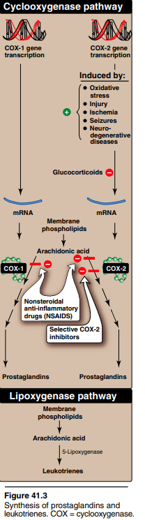
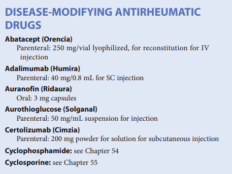

1.OVERVIEW
→ immunomediated disease
- rheumatoid arthritis
- as nonself and initiate an inflammatory attack.
- stimulation of T-lymphocytes
- recruit and activate monocytes and macrophages.
- these cells [T] secrete pro-inflammatory cytokines
2.increased production of C-creative by hepatocytes
3.increased production and release of proteolytic enzymes (collagenases & metalloproteinases)
- by chondrocytes (cells that maintain cartilage)
- leading to degradation of cartilage
- resulting in focal bone erosions and bone demineralization
→ B-lymphocytes also invovled an will produce rheumatoid factor
- and other antibodies which will maintain inflammaiton.
- progressive tissue injury
- joint damage and erosions
- functional disability
- signifignant pain
- reduction in quality of life.
- anti-inflammatory
- immunosupressive agents
- reducing inflammation and pain
- halting (or at least slowing)
- the progression of the disease.
2.DISEASE-MODIFYING ANTIRHEUMATIC AGENTS (DMARDs)
→ DMARD's used in the treatment of RA
- slow the course of the disease
- induce remission
- prevent further destruction of the join/tissues
- help repidly to help stop the progression of the disease at the earlier stages
2.1 Choice of drug
→ NO one of DMARD's is effacious and safe → trials
→ Methotrexate or hydrochloroquine
- effacious
- well tolarated
- well known side effects profiles
- Leflunomide
- Anakinra
- TNF inhibitors
→ Combination therapies are both safe and efficacious (e.g. methotrexate + TNF inhibitor //or other combination)
- treatment with Rituximab or abatacept may be tried.
3.METHOTREXATE
→ synthetic antimetabolite
→ used alone or in combination
→ slow the appearence of new erosions within 3 to 6 weeks
→ it is an immunosupressant
- effectiveness in autoimune disease [in higher doses]
- mucosal ulceration
- nausea → common toxicities
- leukopenia/anemia
- GI ulceration and alopeia due to inhibiting cellular profilation
- progressive related hepatotoxicity [in the form of enzyme elevation]
- can be reduced by the use of — leucovorin 24 — hours after each weekly dose or daily folic acid
- may decrease the methotrexate efficacy about 10%
3.1Mechanism of action
→ inhibition of AICAR (aminoimidazolecarboxamide ribonucleotide tranfomylase) + thymidylate synthase
- which accumulates intracelluary
- competatively inhibits AMP deaminase → accumulation of AMP
- then AMP → extracellularly adenosine [ a potent inhibitor of inflammation] → disfunction of neutriphilis,macrophages,dentric cells and lymphocytes
- polymorphonuclear chemotaxis
- lymphocyte/macrophages function
- stimulates apoptosis in immune-inflammataory cells
- inhibition of proinflammataory cytokines linked to rheumatoid synovitis.
4.LEFLUNOMIDE
→ non-biologic/immunomodulatory agent
→ used as monotherapy / combination [with methotrexate]
4.1Mechanism of Action
→ rapid converstion
- intestine
- plasma → to it's active metabolite
→ inhibit T-cells profilation + production of autoantibodies by B cells
→ Secondary effects may be
- increase of interleukin-10 receptor mRNA
- decrease intereleukin-8 type A receptor mRNA
- decrease TNF-α-dependent nuclear factor
4.2Pharmacokinetics
→ completely absorbed
→ plasma half-life of 19 days
→ cholestyramine can enchance leflunomide excrection and increase tolta clearence by 50%
4.3Indicaiton
→ is effective as methotrexate
→ rehumatoid arthritis
→ inhibition of body damage
→ reduce pain
4.4Adverse Effects
→ diarrhea
→ elevation in liver enzymes
- can be reduced by decreasing the dose
→ weigh gain
→ increase blood pressure
→ CONTRAINDICATED : pregnancy
5.CHLOROQUINE & HYDROXYCHLOROQUINE
→ non-biological
→ also used in the treatment of malaria
→ early, mild RA [often combined with methrotrexate]
5.1Mechanism of action
→ unclear
→ suppression of T-lymphocytes [in response to mitogens]
→ decrease leukocyte chemotaxis
→ stabilization of lysosomal enzymes
→ inhibition of DNA/RNA synthesis
→ trapping of free radicals
5.2Pharmacokinetics
→ rapidly abosrbed
→ 50% protein bound in plasma
→ extensively tissue-bound
- particularly in melanin-containing tissues such as the eyes
5.3 Indiacation
→ they are not considered very effective DMARDS
→ dose-loading may increase the rate of response
→ although improve symptoms there is no evidence that these compounds alter bony damage
→ dosage: 6.4 mg/kg/d → hydroxychloroquine
5.4 Adverse effects
→ ocular toxicity may occur at dosage :
- greater than 250mg/d for chloroquine
- greater than 6.4mg/kg/d for hydroxychloroquine
6.SULFASALAZINE
→ synthetic DMARD
→ metabolized to sulfapyridine[active moeity] and 5-aminosalicylic acid.
→ early,mild RA in combination with hydroxychloroquine and methotrexate
→ 10-20% of orally admin. is absorbed
→ half-life 6-17 hours
→ 2-3g/d
→ onest of activity is 1 to 3 monhts
→ 30% of patients discontinioun therapy because of toxicity
→ nause , vomiting , headache , rash.
→ associated with leukopenia
7.AZATHIOPRINE
→ immunosupressive agent
- orally
- parenteraly
→ metabolized to 6-mercaptopurine by the liver
→ combined with aspirin , NSAIDs , low dose corticosteroids in the treatment of RA
→ dosage : 2 mg/kg/d
→ low or absent thiopurine S-methyltranferase acitvity [ dose adjustment is recommended]
→ psoriatric arthritis, reactive arthritis and more
→ patinets treated with "alkylating agent" — cyclophosphamide — chlorambucil — melphalan
- may prohibit risk of neoplasia
- GI distrurbances
8.CYCLOPHOSPHAMIDE
→ bifunctional alkylating agent ( related to mechlorethamine ) [synthetic DMARDS]
→
→ produce cytotoxic effects
- B and T ceels
- selectively suppress B-lymphocytes activity.
→ decrease immunoglobulin secretion
→ in RA
- modulates the immune response
→ myelosuppressive effect
→ teratogenic
→ GI distrubrances , alopecia , infertility
9.GLUCOCORTIDCOIDS
→ potent anti-infalammatory agents
- bridge the time until DMARDS are effective.
- dose up to 10mg of presidone.
BIOLOGIC THERAPIES IN RHEUMATAOID ARTHRITIS
→ intereleukin -1 and TNF-a
- pro inflammatory cytokines involed in the pathogenesisi of RA
- stimulate synovial cells to profilate and synthesize collagenase
- therby degrating cartilage,stimulating bone resorption and inhibiting proteoglycan synthesis
- Etanercept,Adalimumab,Infliximab,Golimumab,Cetrolizumab
- have shown to — decrease signs and symptoms of RA
- reduce progression of structual damage,
- improve physical function
→ if not respond to TNF an other one can be used
- or introduction of methotrexate
→ fuglan opportunistic infenctions
→ cautiously in those with heart failure
10.ETANERCEPT
→ genetically engineered
→ soluble
→ recombinant
→ fully human receptor fusion protein that bind to TNF-a
- blocking its interaction with cell surface
- polyarticular-course juvenile RA, psoriatic arthritis , ankylosing spondylits, psoriasis
- retarding disease progress
- improve function
- achieving remission
10.1Pharmacokinetics
→ subcutaneusly
- twice a week
→ half-life : 115 hours
10.2Adverse Effects
→ well tolerated
→ no toxicities or antibodies reproted
→ can produce local inflammation at the site of infenction.
11.INFLIXIMAB
→ chimeric immunoglobulin Gk monoclonal antibody composed of human and murine regions
→ binds specifically to human TNF-a → inhibits binding with its receptor
→ in combination with methotrexate
- not used as monotherapy because of the development of antibodies [ → reduction in efficacy]
11.1Pharmacokientics
→ infused IV over at least 2 hours
→ half life : 9.5 days
→ metabolism and elimination have not been described
11.2Adverse Effect
→ infusion site reactios
- fever chills , pruritus , urticaria ,
→ leukopenia, neutropenia , thrombocytopenia , pancytopenia.
12.ADALIMUMAB
→ recombinant monoclonal antibody[IgG1] that binds to TNF-a
- intefering with endogenous TNF-a activity by blocking its binding to the surface receptors
C-creative proteins
→ monotherapy or in combination with methotrexate
→ subcutaneously with half life of 10-20 days
→ usual dosage for RA: 40mg every other weeks
→ clearence is decreased by more than 40% in the presence of methotrexate
→ it's also indicated for — psoriatic arthritis, ankylosing spondylitis , Crohn disease
12.1Pharmacokinetics
→ admin subcutaneusly weekly or every other week
→ average absolute bioavailability is 64% and conc. in the synovial fluid may reach 31/96% of serum conc.
→ headache, nausea, agranulocytosis , rash , increased risk of infenction.
12.2 Adverse effects
→ headache , nausea , agranulocytosis , rash , reaction in the site of injenction , increased risk of infention
13.GOLIMUMAB
→ neutralize the biological activity of TNF-α
- by binding to it and blocking its interaction with cell surface
- bind to both soluble and the transmembrane bioactive forms of human TNF-α,
- significant reduction in pro-inflammatory + autoimmune responses is observed.
13.1Pharmacokinetics
→ subcutaneously once a month (50mg)
- in combination with methotrexate or other nonbiologic DMARDs
- 14 days
13.2Adverse effects
→ may increase hepatic enzymes
→ may increase the risk of malignancies and serious infenctions
- turbeculosis
- opportunistic infenction
- erythema
- itching
- burning
14.CERTOLIZUMAB PEGOL
→ UNIQUe TNF-a blocker
- contains Fab fragment of a humanized antibody
- potent neutralizer of TNF-a biological actions.
→ clearence is decreased with decreasing body weight
→ dosage : 400mg initially and at weeks 2 and 4.
→ combined with polyethylene glycol
- admin. every 2 weeks in combination with methotrexate
- adr → similar to other TNF inhibitors.
15.ANAKINRA
→ IL-1 induced by inflammatory stimuli and mediates a variety of immunologic responses
- degradation of cartilage and stimulation of bone resorption
- because it binds to IL-1 receptor thus preventing actions of IL-1
→ used alone or in combination with DMARDs [or TNF-inhibitors]
→ monitoring in the site of infenction
→ associated with neutropenia
→ subcutaneously once a day if renal function is normal
- every other day in those to moderate to severe renal impairment
16.ABATACEPT
→ T-lymphocytes needs two interaction to become active
- antigen presenting cell (macrophages or B cells ) must interact with the receptor on the T-cell
- proteins on the antigen-presenting interact with unit of protein on the T-cells.
- resulting is activating T-lymphocytes responsible of inflammatmion in RA
- soluble recombinant fusion protein → preventing full T-cell activation
- slowing the progression of structual damage
- improving physical function in adult patients with moderate to severe RA
- patients tried and failed to the treatment with DMARDs/methotrexate/TNF-inhibitors/anakinra
16.1Pharmacokinetics
→ dosagea is based upon weight
- multiple dosage 10mg/kg is 13 days (range , 8-25 days)
16.2Adverse effects
→ headache , upper respiratory infenctions, nashopharyngitis , nausea
17.RITUXIMAB
→ B-lymphocytes are derived from the bone marrow and are necessary for efficient immune repsonse.
- in RA B-cells perpetuate the inflammatory process in the synovium
- activating T lymphocytes
- producing autoantibodies and rheumatoid factor
- producing pro-inflammatory cytokines (TNF-a and IL-a)
- directed against CD20 antigen found on the surface of normal and indicated in combination with methotrexate.
17.1Pharmacokientics
→ admin. as two 1000mg IV infunsion separted by 2 weeks
→ reduce severity of infunsion reactions
- methylprenisolone at 100mg IV
- equivalent admin. 30 minutes prior of each infunsion
17.2Adverse Effects
→ urticaria , hypotension , angioedema
- after the first infunsion

{kind=link}
{kind=link}
{kind=link}
{kind=link}
{kind=link}
{kind=link}